Vraag 1
Voor welke reumatologische aandoening zijn de afwijkingen aan de wervelkolom op deze röntgenfoto karakteristiek?
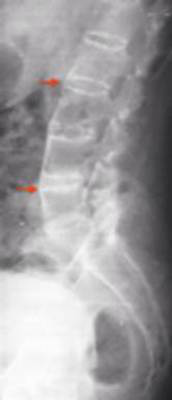
Vraag 2
Welke factor is geassocieerd met een verhoogd risico op het krijgen van artrose (osteoarthritis)?
Vraag 3
Wat is de meest waarschijnlijke oorzaak van deze jeukende huidafwijking?
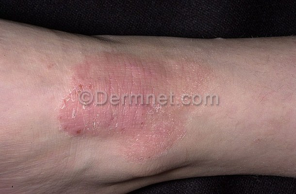
Vraag 4
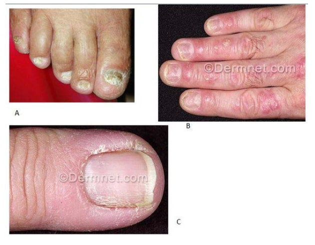
Geef de juiste diagnose bij de afbeeldingen.
Sleep een optie naar de bijbehorende rij, of tik eerst op een kaart en dan op een rij.
A
Sleep hier naartoe
B
Sleep hier naartoe
C
Sleep hier naartoe
Vraag 5
Welke curve geeft de IgM respons van een herinfectie met CMV het beste weer?
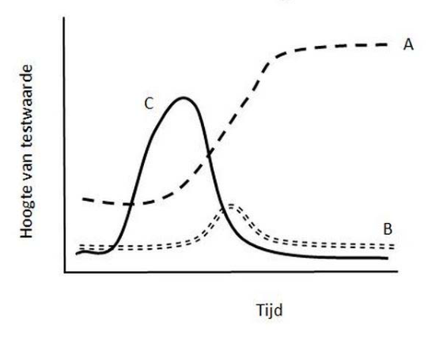
Vraag 6
Bij diverse gewrichtsaandoeningen kunnen ook huidafwijkingen worden gezien. Welke afwijking hoort bij welke aandoening?
Sleep een optie naar de bijbehorende rij, of tik eerst op een kaart en dan op een rij.
Erythema nodosum
Sleep hier naartoe
Fotosensitiviteit
Sleep hier naartoe
Noduli
Sleep hier naartoe
Tophi
Sleep hier naartoe
Vraag 7
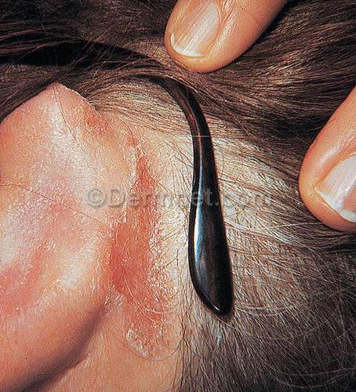
Kies de juiste alternatieven.
Voor de diagnostiek van deze huidafwijking (zie afbeelding) zijn het meest zinvol.
Vraag 8
Noem drie voorkeursplaatsen van eczema seborroïcum adultorum.
Meerdere antwoorden mogelijk.
Vraag 9
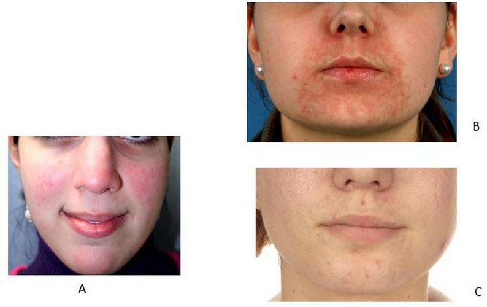
Plaats de juiste diagnose bij elke foto (zie afbeelding).
Sleep een optie naar de bijbehorende rij, of tik eerst op een kaart en dan op een rij.
Foto A
Sleep hier naartoe
Foto B
Sleep hier naartoe
Foto C
Sleep hier naartoe
Vraag 10
Wat is de eerste keus behandeling bij deze in Nederland opgelopen huidaandoening (zie afbeelding)?
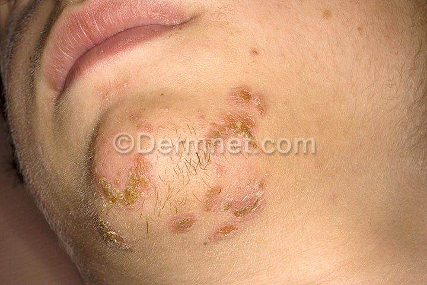
Vraag 11
Juist of onjuist?
De incidentie van tuberculose is in Nederland momenteel zeer laag, maar wereldwijd zijn er bijna 2 miljard mensen besmet.
Een cruciaal onderdeel van de afweerreactie tegen Mycobacterium tuberculosis is de interactie tussen T-cellen en makrofagen met behulp van interferon-gamma.
Vraag 12
Itraconazol wordt regelmatig voorgeschreven voor onychomycosen; itraconazol is een sterke remmer van CYP3A4. Simvastatine (cholesterolverlager) wordt door het CYP3A4 enzym gemetaboliseerd tot de niet-actieve vorm, die vervolgens met de feces wordt uitgescheiden.
Waarom is gelijktijdig gebruik van simvastatine en itraconazol niet geadviseerd?
Vraag 13
Voor welke reumatologische aandoening zijn de afwijkingen aan het bekken op deze röntgenfoto karakteristiek?
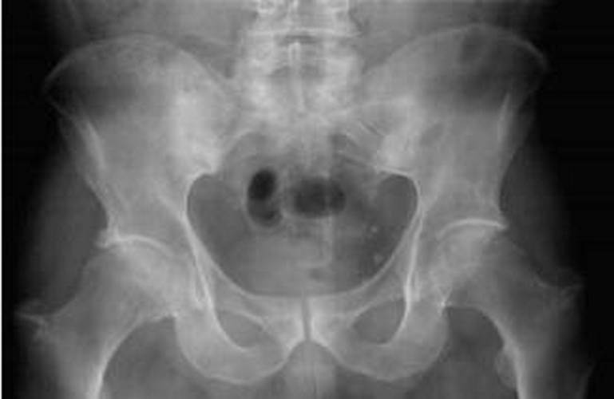
Vraag 14
Kies de juiste alternatieven.
De dermatoloog stelt de diagnose . Het meest aangewezen beleid is .
Vraag 15
Wat is de meest voorkomende presentatie van borreliose (de ziekte van Lyme)?
Vraag 16
Voor welke reumatologische aandoening aan de handgewrichten en het polsgewricht is deze röntgenfoto karakteristiek? [zie foto]
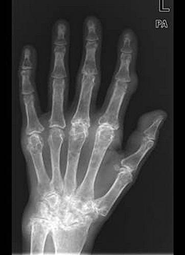
Vraag 17
Wat is de eerste keus voor behandeling van hypostatisch eczeem als monotherapie?
Vraag 18
Welke twee onderliggende huidaandoeningen kunnen een erytrodermie geven?
Meerdere antwoorden mogelijk.
Vraag 19
Welk patroon van aangedane gewrichten past het beste bij artritis psoriatica? [kies uit foto a, b, c of d]
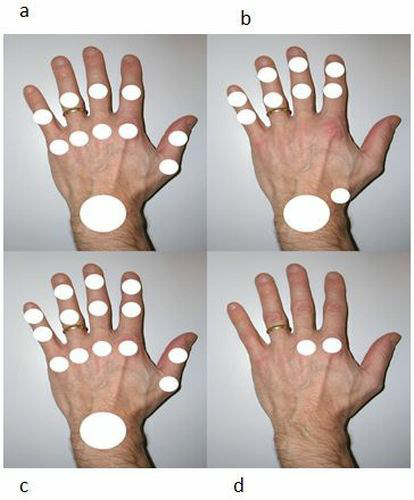
Vraag 20
Welke geneesmiddelen kunnen, naast bèta-blokkers, psoriasis triggeren?
Vraag 21
Voor welke reumatologische aandoening zijn de afwijkingen aan de wervelkolom op deze röntgenfoto karakteristiek?
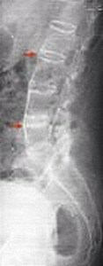
Vraag 22
Voor welke gewrichtsaandoening zijn de afwijkingen aan de rechterhand op deze foto karakteristiek?

Vraag 23
Wat is de meest voorkomende oorzaak van erytrodermie?
Vraag 24
Voor welke reumatologische aandoening zijn de afwijkingen aan het bekken op deze röntgenfoto karakteristiek?
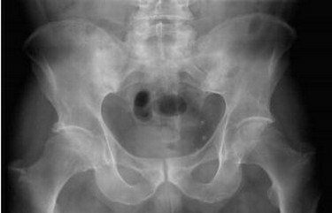
Vraag 25
Voor welke gewrichtsaandoening zijn de afwijkingen aan de rechterhand op deze foto karakteristiek?
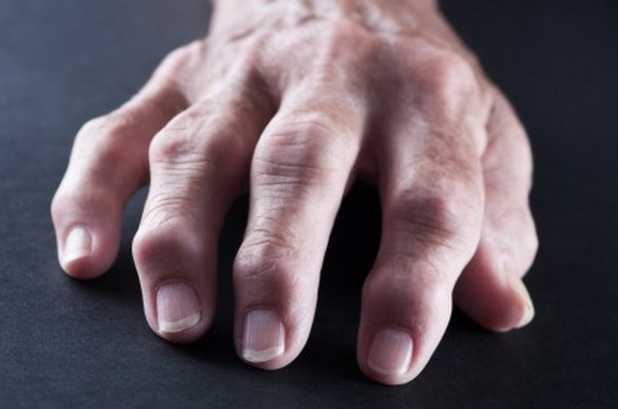
Vraag 26
Wat zou de reden zijn van het feit dat scabies (mensenschurft) in ontwikkelingslanden tot de Neglected Tropical Disease (NTD's) wordt gerekend?
Vraag 27
Welk patroon van aangedane gewrichten past het beste bij reumatoïde artritis? [kies uit foto a, b, c of d]
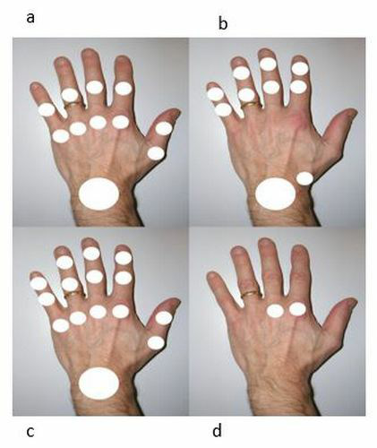
Vraag 28
Een allergisch contacteczeem aan de handen kan ontstaan bij mensen die werken in huidbelastende beroepen. Wat zijn bekende beroepen die hierbij een risico lopen?
Vraag 29
De huiduitslag bij clindamycine-allergie kan lijken op de rash die bij mazelen gezien wordt. Hoe is de allergie-rash het best te omschrijven?
Vraag 30
Kies de juiste alternatieven.
Lokale corticosteroïden zijn beschikbaar in diverse vehicula. Hoe natter het eczeem is, des te meer de basis moet bevatten; hoe droger, des te de basis (vehiculum).
Vraag 31
Bij de real-time-polymerase kettingreactie (RT-PCR) voor de diagnostiek van infectieziekten wordt gebruik gemaakt van primers en probes. Wat is een probe?
Vraag 32
Welk ziektebeeld komt vaak samen voor met polymyalgia reumatica?
Vraag 33
Wat is de meest voorkomende oorzaak van erytrodermie?
Vraag 34
Giardiasis en amoebiasis zijn beide protozoaire infecties. Hoe loop je beide op?
Vraag 35
Wat is de reden om binnen 24 uur te starten met hoge dosis prednison in geval van een hoge verdenking op craniële grote vaten vasculitis?
Vraag 36
Op welke lokatie komt het overgrote deel van de allergische contact eczemen voor?
Vraag 37
Voor welke gewrichtsaandoening zijn de afwijkingen aan de rechterhand op deze foto
karakteristiek?.
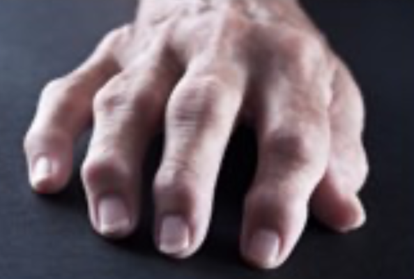
Vraag 38
Wat is de medicamenteuze behandeling van eerste keus bij polymyalgia reumatica?
Vraag 39
Wat is de meest voorkomende presentatie van borreliose (de ziekte van Lyme)?
Vraag 40
Een medewerker van het Rode Kruis in het door oorlog en armoede geteisterde Jemen ziet een jongetje van 10 jaar met plotseling overgeven en grote hoeveelheden waterdunne diarree, meerdere liters per dag. Deze lijkt op 'rijstwater', is licht troebel met vlokjes en heeft bijna geen geur.
Wat is de meest waarschijnlijke diagnose?